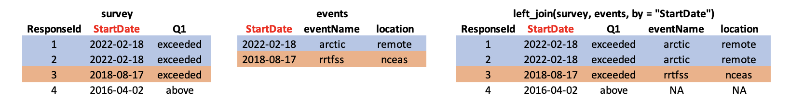

10 Cleaning and Manipulating Data
10.1 Data Cleaning and Manipulation
10.1.1 Learning Objectives
In this lesson, you will learn:
- What the Split-Apply-Combine strategy is and how it applies to data
- The difference between wide vs. tall table formats and how to convert between them
- How to use
dplyrandtidyrto clean and manipulate data for analysis - How to join multiple
data.frames together usingdplyr
10.1.2 Introduction
The data we get to work with are rarely, if ever, in the format we need to do our analyses. It’s often the case that one package requires data in one format, while another package requires the data to be in another format. To be efficient analysts, we should have good tools for reformatting data for our needs so we can do our actual work like making plots and fitting models. The dplyr and tidyr R packages provide a fairly complete and extremely powerful set of functions for us to do this reformatting quickly and learning these tools well will greatly increase your efficiency as an analyst.
Analyses take many shapes, but they often conform to what is known as the Split-Apply-Combine strategy. This strategy follows a usual set of steps:
- Split: Split the data into logical groups (e.g., area, stock, year)
- Apply: Calculate some summary statistic on each group (e.g. mean total length by year)
- Combine: Combine the groups back together into a single table

Figure 1: diagram of the split apply combine strategy
As shown above (Figure 1), our original table is split into groups by year, we calculate the mean length for each group, and finally combine the per-year means into a single table.
dplyr provides a fast and powerful way to express this.
Another exceedingly common thing we need to do is “reshape” our data. Let’s look at an example table that is in what we will call “wide” format:
| site | 1990 | 1991 | … | 1993 |
|---|---|---|---|---|
| gold | 100 | 118 | … | 112 |
| lake | 100 | 118 | … | 112 |
| … | … | … | … | … |
| dredge | 100 | 118 | … | 112 |
You are probably quite familiar with data in the above format, where values of the variable being observed are spread out across columns (Here: columns for each year). Another way of describing this is that there is more than one measurement per row. This wide format works well for data entry and sometimes works well for analysis but we quickly outgrow it when using R. For example, how would you fit a model with year as a predictor variable? In an ideal world, we’d be able to just run:
lm(length ~ year)But this won’t work on our wide data because lm needs length and year to be columns in our table.
Or how would we make a separate plot for each year? We could call plot one time for each year but this is tedious if we have many years of data and hard to maintain as we add more years of data to our dataset.
The tidyr package allows us to quickly switch between wide format and what is called tall format using the pivot_longer function:
site_data %>%
pivot_longer(-site, names_to = "year", values_to = "length")| site | year | length |
|---|---|---|
| gold | 1990 | 101 |
| lake | 1990 | 104 |
| dredge | 1990 | 144 |
| … | … | … |
| dredge | 1993 | 145 |
In this lesson we’re going to walk through the functions you’ll most commonly use from the dplyr and tidyr packages:
dplyrmutate()group_by()summarise()select()filter()arrange()left_join()rename()
tidyrpivot_longer()pivot_wider()unite()separate()
10.1.3 Data Cleaning Basics
To demonstrate how to use these functions, we are going to be using a modified version of some real survey data we have gathered for feedback on our courses (like the one you are taking now!) I’ve made some changes to the original data, including removing references to instructor names, untidying the responses with controlled vocabularies, and scrambling the word order of the free text answers. These changes will help illustrate some of the common issues seen with survey data. They also help ensure that only general conclusions can be gathered from the free text responses, since scrambling the text inhibits our interpretative abilities.
10.1.4 Read in survey data
First, open a new RMarkdown document. Delete everything below the setup chunk, and add a library chunk that calls dplyr, tidyr, and readr:
library(dplyr)
library(tidyr)
library(readr)Aside
A note on loading packages.
You may have noticed the following warning messages pop up when you ran your library chunk.
Attaching package: ‘dplyr’
The following objects are masked from ‘package:stats’:
filter, lag
The following objects are masked from ‘package:base’:
intersect, setdiff, setequal, unionThese are important warnings. They are letting you know that certain functions from the stats and base packages (which are loaded by default when you start R) are masked by different functions with the same name in the dplyr package. It turns out, the order that you load the packages in matters. Since we loaded dplyr after stats, R will assume that if you call filter, you mean the dplyr version unless you specify otherwise.
Being specific about which version of filter, for example, you call is easy. To explicitly call a function by its unambiguous name, you use the syntax package_name::function_name(...). So, if I wanted to call the stats version of filter in this Rmarkdown document, I would use the syntax stats::filter(...).
Challenge
The warnings above are important, but we might not want them in our final document. After you have read them, adjust the chunk settings on your library chunk to suppress warnings and messages.
Now that we have learned a little mini-lesson on functions, let’s get the data that we are going to use for this lesson.
Setup
Navigate to the demo dataset
Right click the “download” button for the file “survey_data.csv”
Select “copy link address” from the dropdown menu
Paste the URL into a
read_csvcall like below
The code chunk you use to read in the data should look something like this:
survey_raw <- read_csv("https://dev.nceas.ucsb.edu/knb/d1/mn/v2/object/urn%3Auuid%3A71cb8d0d-70d5-4752-abcd-e3bcf7f14783", show_col_types = FALSE)This dataset is already relatively clean, but as we’ll see there are a few issues that we need to resolve, and a couple of things we can do to make our analysis easier.
We can examine the dataset in a few different ways, one easy way is the glimpse function, which shows the first few items of every column in the data.frame.
glimpse(survey_raw)## Rows: 69
## Columns: 7
## $ ResponseId <chr> "R_1pXb0f3ruY1IJbR", "R_28B834pFGa72Z4q", "R_1OkjoEUKFhA3NJ…
## $ StartDate <date> 2022-02-18, 2022-02-18, 2022-02-18, 2022-02-18, 2022-02-18…
## $ Q1 <chr> "exceeded expectations", "just above expectations", "just a…
## $ Q2 <chr> "substantial increase", "increase", "increase", "increase",…
## $ Q3 <chr> "from reproducible section. the with I learned topics wasn'…
## $ Q4 <chr> "If that general. am I in amount so evil tired think we I t…
## $ notes <lgl> NA, NA, NA, NA, NA, NA, NA, NA, NA, NA, NA, NA, NA, NA, NA,…For some context, here is a table showing what each of the questions are asking:
| id | question |
|---|---|
| Q1 | To what degree did the workshop met your expectations? |
| Q2 | How has your skill level changed in understanding the value of reproducible research? |
| Q3 | What is the most valuable thing you learned during the workshop? |
| Q4 | What do you think should be changed for future offerings? |
Q1 and Q2 have responses with a controlled vocabulary (choice answers), while Q3 and Q4 are free text.
About the pipe (%>%) operator
Before we jump into learning tidyr and dplyr, we first need to explain the %>%.
Both the tidyr and the dplyr packages use the pipe operator - %>%, which may look unfamiliar. The pipe is a powerful way to efficiently chain together operations. The pipe will take the output of a previous statement, and use it as the input to the next statement.
Say you want to both filter out rows of a dataset, and select certain columns. Instead of writing
df_filtered <- filter(df, ...)
df_selected <- select(df_filtered, ...)You can write
df_cleaned <- df %>%
filter(...) %>%
select(...)If you think of the assignment operator (<-) as reading like “gets”, then the pipe operator would read like “then.”
So you might think of the above chunk being translated as:
The cleaned dataframe gets the original data, and then a filter (of the original data), and then a select (of the filtered data).
The benefits to using pipes are that you don’t have to keep track of (or overwrite) intermediate data frames. The drawbacks are that it can be more difficult to explain the reasoning behind each step, especially when many operations are chained together. It is good to strike a balance between writing efficient code (chaining operations), while ensuring that you are still clearly explaining, both to your future self and others, what you are doing and why you are doing it.
RStudio has a keyboard shortcut for %>% : Ctrl + Shift + M (Windows), Cmd + Shift + M (Mac).
Selecting/removing columns: select()
One of the first things we might want to do to this dataset is to remove the notes column. In this case, the notes column is completely empty, so it doesn’t serve us much purpose. Let’s use the select function to select the columns we want to keep.
survey_clean <- survey_raw %>%
select(ResponseId, StartDate, Q1, Q2, Q3, Q4)select also allows you to say which columns you don’t want, by passing unquoted column names preceded by minus (-) signs:
survey_clean <- survey_raw %>%
select(-notes)Split-Apply-Combine
Let’s say we want to see the number of responses for each choice given for question 1. We’ll use the split-apply-combine strategy to split that column into groups for each unique response, and then apply a function to count the number of times each group appears.
group_by splits the rows of your data.frame according to the unique values within the grouping column. Running group_by on its own won’t look like anything happened, since that information is stored behind the scenes in your data.frame which otherwise looks the same.
summarize applies the function you pass to it, creating a new column with the function applied over each unique value in your grouping column.
q1_response <- survey_raw %>%
group_by(Q1) %>%
summarise(n = n())| Q1 | n |
|---|---|
| 1 | 5 |
| exceeded expectations | 38 |
| just above expectations | 14 |
| just below expectations | 1 |
| met expectations | 11 |
What does that 1 mean? Turns out our kind of messy data didn’t have a consistent coding system. After doing some research, we figure out that 1 actually means “below expectations”. Let’s fix that in our original data so the data are consistent.
Changing column content: mutate()
We can use the mutate function to change a column, or to create a new column. Here we change the column Q1, using the if_else function. This function takes three arguments, a conditional statement, what to return if the condition is TRUE, and what to return if the condition is FALSE. In this case, our implementation says if Q1 is equal to (==) 1, change the value to “below expectations.” Otherwise, keep the value of Q1.
survey_clean <- survey_raw %>%
select(-notes) %>%
mutate(Q1 = if_else(Q1 == "1", "below expectations", Q1))Now we can do our group by and summarize again:
q1_response <- survey_clean %>%
group_by(Q1) %>%
summarise(n = n())| Q1 | n |
|---|---|
| below expectations | 5 |
| exceeded expectations | 38 |
| just above expectations | 14 |
| just below expectations | 1 |
| met expectations | 11 |
If we want to arrange our rows from highest to lowest counts, we can use arrange. The minus sign sorts from high to low.
q1_response <- survey_clean %>%
group_by(Q1) %>%
summarise(n = n()) %>%
arrange(-n)| Q1 | n |
|---|---|
| exceeded expectations | 38 |
| just above expectations | 14 |
| met expectations | 11 |
| below expectations | 5 |
| just below expectations | 1 |
Let’s look at the results from question 2 now.
q2_response <- survey_clean %>%
group_by(Q2) %>%
summarise(n = n())| Q2 | n |
|---|---|
| increase | 19 |
| Increase | 2 |
| no change | 3 |
| slight increase | 4 |
| substantial increase | 38 |
| substantial Increase | 3 |
It also has issues with the unique values, with some stray capitalization errors.
We will use mutate again here to change the existing Q2 column. On the right hand of the expression in the mutate function, we include another function, called to_lower. This function will turn all of the characters in the column into lower case. We can add this to our existing data cleaning pipeline as below:
survey_clean <- survey_raw %>%
select(-notes) %>%
mutate(Q1 = if_else(Q1 == "1", "below expectations", Q1)) %>%
mutate(Q2 = tolower(Q2))Looking at the aggregated responses again:
q2_response <- survey_clean %>%
group_by(Q2) %>%
summarise(n = n()) %>%
arrange(-n)| Q2 | n |
|---|---|
| substantial increase | 41 |
| increase | 21 |
| slight increase | 4 |
| no change | 3 |
Changing shape: pivot_longer() and pivot_wider()
Although the format of this table is tidy, we may have good reasons to change shape to where the question is in one column, and the response in another. This may make certain types of plots or tables easier to make.
To change from a wide format to a long format, we use pivot_longer. The key arguments to this function are: cols, the columns you are pivoting over, names_to, the column name you are creating from the column names covered by cols, and values_to, the column name you are creating from the values in those columns. Note in the cols argument, we use a little helper function called starts_with to select the columns starting with “Q” (Q1, Q2, Q3, Q4) as our pivoting columns.
Our new column of old column names will be called “id” to indicate that it represents the question id. The new column of values within those columns we will call “answer.”
survey_long <- survey_clean %>%
pivot_longer(cols = starts_with("Q"), names_to = "id", values_to = "answer")This kind of pivoting allows us to quickly create a table with responses to both question 1 and question 2, summarized. First we use the filter function to filter for those questions, then the group_by and summarize we have been using.
comb <- survey_long %>%
filter(id %in% c("Q1", "Q2")) %>%
group_by(id, answer) %>%
summarise(n = n()) %>%
arrange(id, -n)## `summarise()` has grouped output by 'id'. You can override using the `.groups`
## argument.| id | answer | n |
|---|---|---|
| Q1 | exceeded expectations | 38 |
| Q1 | just above expectations | 14 |
| Q1 | met expectations | 11 |
| Q1 | below expectations | 5 |
| Q1 | just below expectations | 1 |
| Q2 | substantial increase | 41 |
| Q2 | increase | 21 |
| Q2 | slight increase | 4 |
| Q2 | no change | 3 |
10.1.5 Joins
So now that we’re awesome at manipulating a single data.frame, where do we go from here? Manipulating more than one data.frame.
If you’ve ever used a database, you may have heard of or used what’s called a “join”, which allows us to to intelligently merge two tables together into a single table based upon a shared column between the two. We’ve already covered joins in [Data Modeling] so let’s see how it’s done with dplyr.
The dataset we’re working with contains an additional CSV which has information about each individual training event. This is a really common way of storing auxiliary information about our dataset of interest (survey responses) but, for analytical purposes, we often want them in the same data.frame. Joins let us do that easily.
Let’s look at a preview of what our join will do by looking at a simplified version of our data:

First, we read in the events data just as we did previously with the survey data.
events <- read_csv("https://dev.nceas.ucsb.edu/knb/d1/mn/v2/object/urn%3Auuid%3A0a1dd2d8-e8db-4089-a176-1b557d6e2786", show_col_types = FALSE)Now, we can use our left_join function to join the two tables together by the StartDate column.
Notice that I have deviated from our usual pipe syntax (although it does work here!) because I prefer to see the data.frames that I am joining side by side in the syntax.
survey_joined <- left_join(survey_long, events, by = "StartDate")Now we have a joined data frame!
10.1.5.1 Review
That was a lot of exposition for very little code. Here is a summary of the main data cleaning steps we used:
survey_raw <- read_csv("https://dev.nceas.ucsb.edu/knb/d1/mn/v2/object/urn%3Auuid%3A71cb8d0d-70d5-4752-abcd-e3bcf7f14783", show_col_types = FALSE)
survey_clean <- survey_raw %>%
select(-notes) %>%
mutate(Q1 = if_else(Q1 == "1", "below expectations", Q1)) %>%
mutate(Q2 = tolower(Q2))
events <- read_csv("https://dev.nceas.ucsb.edu/knb/d1/mn/v2/object/urn%3Auuid%3A0a1dd2d8-e8db-4089-a176-1b557d6e2786", show_col_types = FALSE)
survey_joined <- left_join(survey_clean, events, by = "StartDate")As well as the split-apply-combine for questions 1 and 2:
q1_response <- survey_clean %>%
group_by(Q1) %>%
summarise(n = n()) %>%
arrange(-n)
q2_response <- survey_clean %>%
group_by(Q2) %>%
summarise(n = n()) %>%
arrange(-n)And finally the pivot long:
survey_long <- survey_clean %>%
pivot_longer(cols = starts_with("Q"), names_to = "id", values_to = "answer")separate() and unite()
separate() and its complement, unite() allow us to easily split a single column into numerous (or numerous into a single).
This can come in really handle when we need to split a column into two pieces by a consistent separator (like a dash).
Let’s make a new data.frame with fake data to illustrate this. Here we have a set of site identification codes. with information about the island where the site is (the first 3 letters) and a site number (the 3 numbers). If we want to group and summarize by island, we need a column with just the island information.
sites_df <- data.frame(site = c("HAW-101",
"HAW-103",
"OAH-320",
"OAH-219",
"MAI-039"))
sites_df %>%
separate(site, c("island", "site_number"), "-")## island site_number
## 1 HAW 101
## 2 HAW 103
## 3 OAH 320
## 4 OAH 219
## 5 MAI 039- Exercise: Split the
citycolumn in the followingdata.frameintocityandstate_codecolumns:
cities_df <- data.frame(city = c("Juneau AK",
"Sitka AK",
"Anchorage AK"))
# Write your solution hereunite() does just the reverse of separate(). If we have a data.frame that contains columns for year, month, and day, we might want to unite these into a single date column.
dates_df <- data.frame(year = c("1930",
"1930",
"1930"),
month = c("12",
"12",
"12"),
day = c("14",
"15",
"16"))
dates_df %>%
unite(date, year, month, day, sep = "-")## date
## 1 1930-12-14
## 2 1930-12-15
## 3 1930-12-16- Exercise: Use
unite()on your solution above to combine thecities_dfback to its original form with just one column,city:
# Write your solution here